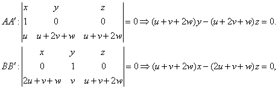
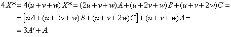
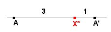
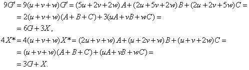

| Sea X un punto arbitrario del triángulo
ABC. Construimos los puntos C', B', A' como
los centros de gravedad de los triángulos ABX, AXC
y BXC. Sea X* el punto de intersección de las rectas
AA', BB', y CC'. Se pide : a) El triángulo A'B'C' es homotético al triángulo ABC, Calcular el centro y la razón de la homotecia. b) Si G y G' son los centros de gravedad de los triángulos ABC, y A'B'C', respectivamente, probar que los puntos G, G', X y X* son colineales y calcular su razón doble. |
|
Romero, J.B.(2005): Comunicación
personal
|
Usaremos coordenadas baricéntricas.
Sea X un punto cualquiera con coordenadas (u : v : w). Para facilitar los cálculos que siguen supondremos que estas coordenadas están normalizadas, es decir cumplen u + v + w = 1.
Comencemos diciendo que el baricentro el triángulo de referencia ABC, donde A=(1:0:0), B=(0:1:0) y C=(0:0:1) es G=(1:1:1), y que estas coordenadas se obtienen sumando las coordendas de los tres vértices ya que éstas tienen la misma suma (es decir, el mismo peso).
De forma similar, el baricentro de los puntos A=(u + v +
w : 0 : 0), B=(0 : u + v + w : 0) y X=(u
: v : w) (todos con la misma suma) se obtiene sumando coordenadas:
C' = (2u + v + w : u + 2v + w:
w).
De forma simétrica obtenemos A' = (u, u + 2v + w : u + v +2w), B' = (2u + v + w : v : u + v + 2w).
Otra vez lo mismo, las coordenadas de A', B', C', suman lo mismo, su baricentro es G'=(5u+2v+2w : 2u+5v+2w : 2u+2v+5w).
Por último, para hallar las coordenadas del punto X*, hallamos las ecuaciones de las rectas AA' y BB'.

resultando X* = (2u + v + w : u + 2v + w : u + v + 2w).
Observemos primero que

Esto quiere decir que AX* : X*A' = 3:1 o que X*A' : X*A = -1/3.

Como lo mismo puede decirse para B y B', y C y C', resultará que el triángulo A'B'C' es homotético al triángulo ABC con centro X* y razón de homotecia -1/3.
Ahora, considerando que

deducimos no sólo que G, G', X y X* están alineados, sino también cuál es la ubicación exacta de unos respecto de otros.
Así, GG' : G'X = 3:6 = 1:2 y GX* : X*X =1:3. Por tanto, los puntos quedarían así a lo largo de la recta:
Entonces la razón doble
pedida es